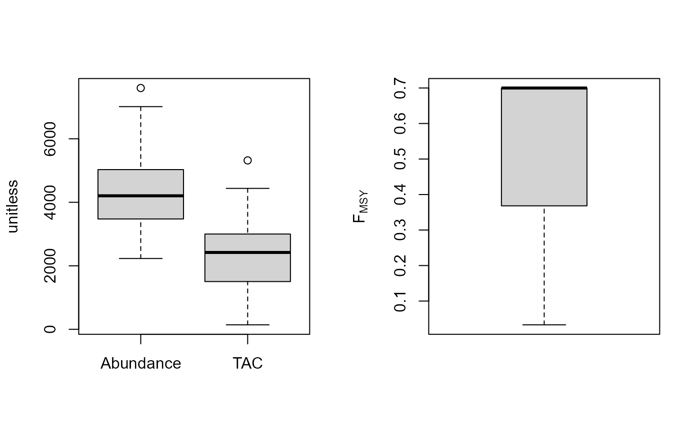
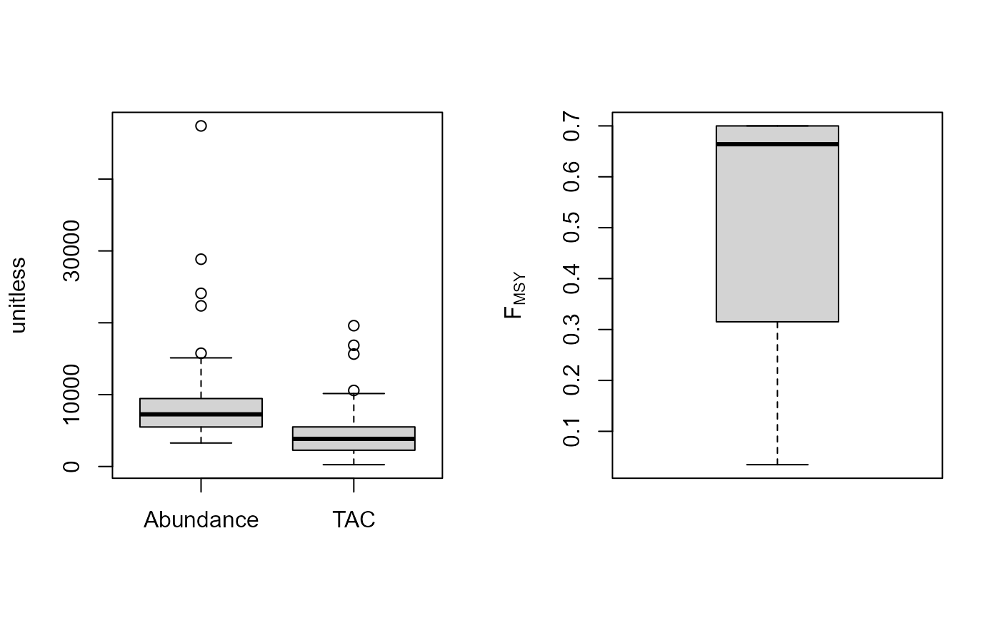
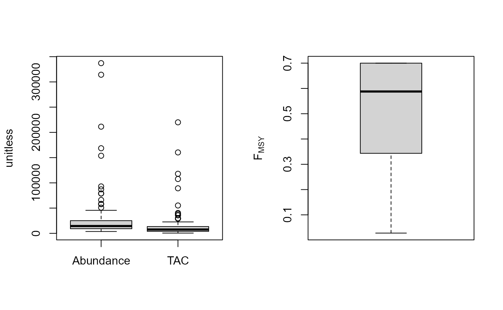

Fdem.RdFMSY is calculated as r/2 where r is calculated from a demographic approach (inc steepness). Coupled with an estimate of current abundance that gives you the OFL.
Fdem(x, Data, reps = 100, plot = FALSE) Fdem_CC(x, Data, reps = 100, plot = FALSE, Fmin = 0.005) Fdem_ML(x, Data, reps = 100, plot = FALSE, Fmin = 0.005)
| x | A position in the data object |
|---|---|
| Data | A data object |
| reps | The number of stochastic samples of the MP recommendation(s) |
| plot | Logical. Show the plot? |
| Fmin | The minimum fishing mortality rate derived from the catch-curve analysis |
An object of class Rec with the TAC slot(s) populated
The TAC is calculated as: $$\textrm{TAC} = F_{\textrm{MSY}} A$$ where A is an estimate of current abundance, and \(F_{\textrm{MSY}}\) is estimated as \(r/2\), where \(r\) is the intrinsic rate of population growth, estimated from the life-history parameters using the methods of McAllister et al. (2001).
Fdem: Current abundance is assumed to be known (i.e Data@Abun)
Fdem_CC: Current abundance is estimated from catch curve analysis
Fdem_ML: Current abundance is estimated from mean length
See Data for information on the Data object
Fdem: Abun, FMSY_M, L50, MaxAge, Mort, steep, vbK, vbLinf, vbt0, wla, wlb
Fdem_CC: CAA, Cat, FMSY_M, L50, MaxAge, Mort, steep, vbK, vbLinf, vbt0, wla, wlb
Fdem_ML: CAL, Cat, FMSY_M, L50, Lbar, Lc, MaxAge, Mort, steep, vbK, vbLinf, vbt0, wla, wlb
See Online Documentation for correctly rendered equations
McAllister, M.K., Pikitch, E.K., and Babcock, E.A. 2001. Using demographic methods to construct Bayesian priors for the intrinsic rate of increase in the Schaefer model and implications for stock rebuilding. Can. J. Fish. Aquat. Sci. 58: 1871-1890.
T. Carruthers
#> TAC (median) #> 2400.62#> TAC (median) #> 4485.341#> TAC (median) #> 842.5509